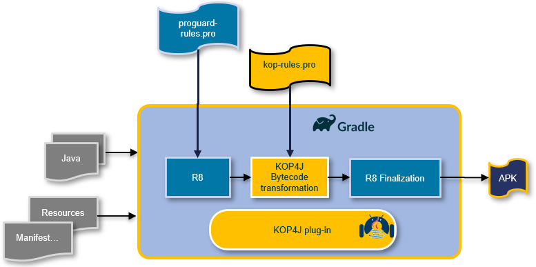

Running KOP4J on Android projects
KOP4J can obfuscate Android Java projects that are built with the gradle toolchain.
To integrate KOP4J, you will have to update or add the following files in your project :
- Top level build.gradle file, to include KOP4J gradle plugin.
- Module level gradle file, to include KOP4J rules files.
- KOP4J rules file to configure your protections.
- Proguard file to add options to make only class to dex conversion.
Top-level build.gradle file
The changes has to be done in the top-level ̀build.gradle file.
Include KOP4J gradle plugin
- In the
repositoriessection, add the path containing the KOP4J libraries. - In the
dependenciessection, add the KOP4J plugin to the classpath.
buildscript {
repositories {
...
flatDir {dirs '/path/to/KOP4J/installation/directory/bin'}
}
dependencies {
...
classpath ':kop-gradle:1.12.1'
}
...
}
Warning
This must be the path to the bin subdirectory of the KOP4J installation dir.
Upgrade Android Gradle plugin
As shrinking and optimization of class files are based on R8, we encountered some issues with the Android Gradle plugin in version prior to 4.1.1.
Be sure to use a version superior or equal to 4.1.1, as in example below :
buildscript {
dependencies {
...
classpath 'com.android.tools.build:gradle:4.1.1'
...
}
...
}
Module-level build.gradle file
The changes need to be done in the app-level app/build.gradle file.
Open it and:
- Apply the KOP4J plugin.
- Set
minifyEnabledtotrue. - Reference the KOP4J configuration files, both default for the platform, and app-specific.
...
apply plugin: 'com.nagra.kop'
...
android {
...
buildTypes {
release {
minifyEnabled true
proguardFiles getDefaultProguardFile('proguard-android-optimize.txt'), 'proguard-rules.pro'
kop.ruleFiles.put(name, [kop.getDefaultKopFile('kop-android-default.txt'), 'kop-rules.pro'])
...
}
...
}
...
}

The proguard rules are dedicated to optimization, shrinking and print mapping.
The KOP4J rules will contains the protections rules : commands starting by -kop
Warning
apply plugin: 'com.nagra.kop' must be set at the beginning of the file.
Warning
The KOP4J options starting by -kop must be declared inside KOP4J rules files.
Add a separate KOP4J rule file
To add a separate KOP4J rule file, create it, and reference it in the app-level build.gradle file.
buildTypes {
release {
minifyEnabled true
proguardFiles getDefaultProguardFile('proguard-android-optimize.txt'), 'proguard-rules.pro'
kop.ruleFiles.put(name, [kop.getDefaultKopFile('kop-android-default.txt'), 'kop-rules.pro', 'my-kop-rules.pro'])
...
}
}
AnNaNaS library
Mandatory when using native hash implementation (default one).
The AnNaNaS Android ARchive (aar file), delivered in the KOP4J package, must be included when native hash strategy is used, which is the default behaviour.
You have to edit the app-level app/build.gradle file and add:
kop {
repositories { flatDir { dirs '/path/to/KOP4J/installation/directory/aar'} }
dependencies.add('implementation', [name:'annanas-Release', ext:'aar']);
}
AnNaNaS Library can be disabled. All the details are described on chapter on AnNaNaS Library
Force the path to kop-core-.jar
The path to kop-core-*.jar should automatically be detected by the plugin.
If this does not work, or if you need to force the use of a different, non-default KOP4J library, this can be specified by editing the app-level app/build.gradle file, and adding:
kop {
pathToKopCoreJar = '/path/to/KOP4J/lib/kop-core-1.12.1.jar'
}
Configure KOP4J protections with rule file(s)
The KOP4J specific options must be declared in specific rule file(s).
Below, an example of a kop-rules.pro :
# -- KOP4J protections --
# Tag a method for certificate check
-kop-check-certificate public class com.example.myapp.MainActivity {private int method1(...);}
# Tag a method for manifest check
-kop-check-manifest public class com.example.myapp.SecondActivity {private int method2(...);}